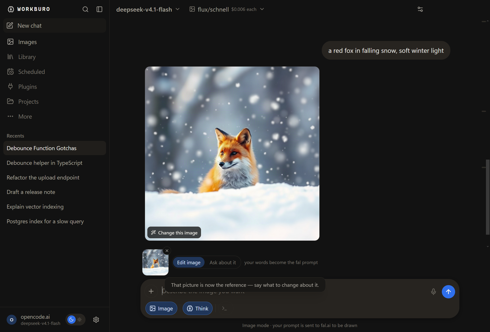
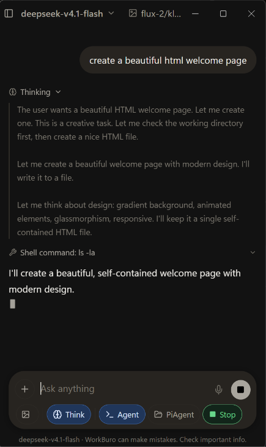
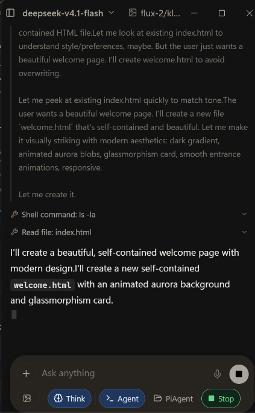
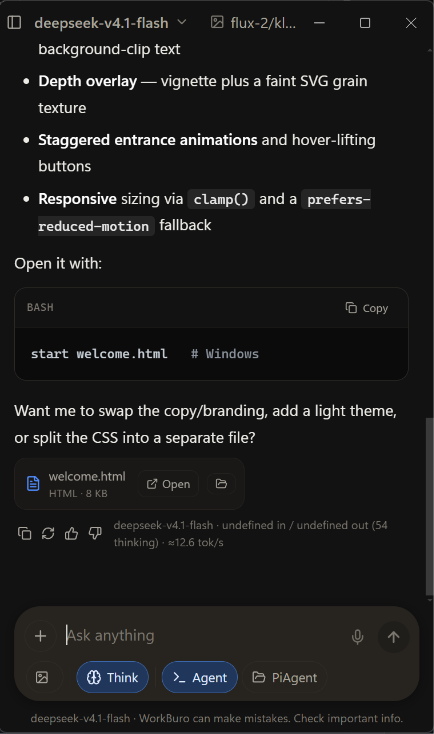

Three things it does
Summon
over whatever you are doing.
A small window, an answer, and gone. Rebindable, and it lives in the tray.
Produce
Ask for a spreadsheet, get a real .xlsx.
CSV, Word, PDF, markdown, JSON and text too, saved to a folder you can open.
Connect
Your endpoint, or your own machine.
Any OpenAI-compatible API. No account needed if you run a model locally.
Alt+Space copied
Pictures and the agent
Pictures
Pictures both ways.
Ask to see something and it draws it. Send one and it changes it from your words.

Agent
Agent when a job needs hands.
Flip it on and the model gets shell and file tools in a folder you can see. Flip it off again.



It lists the folder, reads a file, writes one, and hands you the file with Open next to it.
Download
Check your download against SHA256SUMS-1.0.16.txt.
Unsigned. Windows will show a SmartScreen warning on first run. On macOS, right click the app and choose Open the first time; a plain double click will be refused.